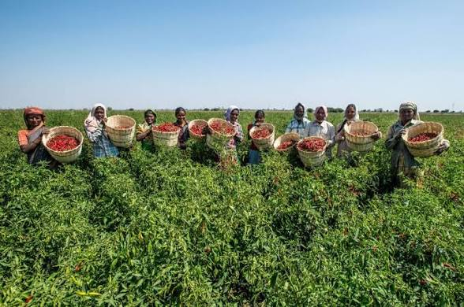

Tourism that reaches households, not just hotels.
Kericho Community Ecotourism exists because we believe the people of this county should benefit from the visitors who come to see it.
Along our routes, we include visits to self-help groups, community-based organisations (CBOs) and local initiatives — not as a side attraction, but as a core part of the experience. Visitors get to see real development work in progress. Communities get to share their story, earn income, and — if visitors wish — receive support for their projects.

Along our routes, visitors may have the opportunity to meet:
[Note: this section will expand as specific groups are confirmed and consent is given for their inclusion.]
When we include a community group in a route, we do so with their full consent and on their terms. That means:
We are committed to ensuring that community visits are genuine exchanges — not performances.
Many of the groups we work with welcome support beyond a visit. If you'd like to contribute, we can connect you directly with the group so you can discuss their needs and priorities.
We do not take a cut of donations. We simply make the introduction.
If you are interested in supporting a specific group, contact us and we'll connect you.
If you are part of a self-help group, CBO or community initiative in Kericho County and would like to be considered for inclusion in one of our routes, we'd love to hear from you.
We are particularly interested in groups working in:
To express interest, contact us with your group's name, location, and a short description of your work.